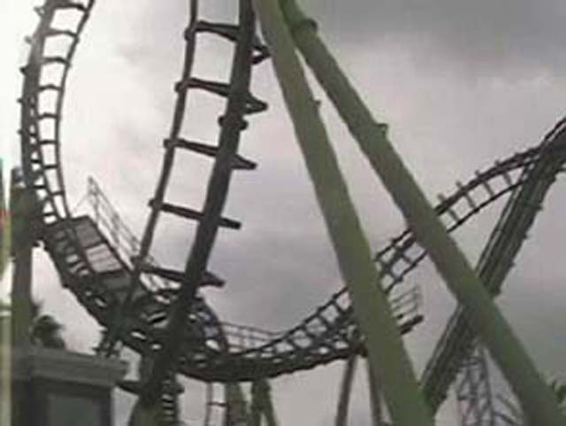
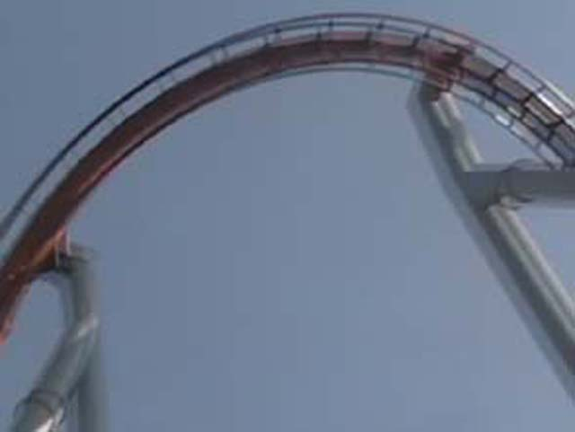
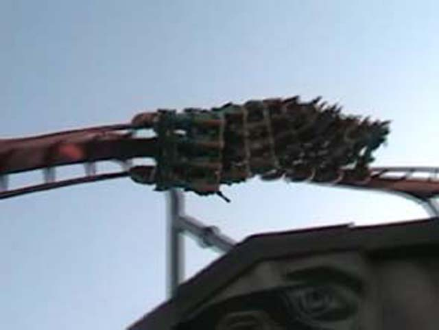

Silver Bullet Media Day
 Ok, so this really isn't Silver Bullet Media Day, but we came to Knotts to ride their new coaster, Silver Bullet.
Ok, so this really isn't Silver Bullet Media Day, but we came to Knotts to ride their new coaster, Silver Bullet.
 It wasn't as good as we expected it to be, but it was still fun and it barley made my Top 10 steel list.
It wasn't as good as we expected it to be, but it was still fun and it barley made my Top 10 steel list.
The operations for Ghostrider SUCKED!!!! The ride operaters kept on constantly chatting, there were lots of line jumpers, It was an hour wait and right when we're about to get on, they add a second train which took an hour because the ride operaters were stalling!!!!!!!!
We all enjoyed Bigfoot Rapids alot.
We were all acting really dumb on Wilderness Scrambler!
Knotts had this kids get a Free T shirt, So Celeste got her T shirt from the Easter Bunny.
Screamin Swing is a fun ride. I just think it should be free like everything else at Knotts.
Celeste is really enjoying her ride on Wipeout.
5 seconds after this photo was taken, celeste experienced MAJOR Brainfreeze!

Boomerang. It can be found at any park. Isaac didn't like Boomerang as it was too Rough.
 Xcelerator. Still the star atracttion at Knotts! Silver Bullet just couldn't beat Xcelerator!
Xcelerator. Still the star atracttion at Knotts! Silver Bullet just couldn't beat Xcelerator!
Supreme Scream, the 2nd tallest drop tower in the world! Its not as intense as it sounds, but it sure is a lot of fun!
Dang It! Now I have to walk to Timberline Twisterer JUST to go to the bathroom!
Don't try this game! It only takes your money for nothing!
 I SUCK at Dance Dance Revelution!
I SUCK at Dance Dance Revelution!
But at least I'm not the only one who sucks.

Silver Bullets first drop looks more fun than it really is!
Yay! We found a game Isaac is good at and doesn't just take his money! He won a Spongebob!
Isaac didn't ride La Revelution because spinning rides make him sick.
I really hope Tasamanian Devil at Six Flags Marine World is better than this.
 Montezoomas Revenge. The only coaster left from when Knotts Berry Farm ACTUALLY sold berries. Its still very fun, but short.
Montezoomas Revenge. The only coaster left from when Knotts Berry Farm ACTUALLY sold berries. Its still very fun, but short.
 Jaguar is Celestes favorite coaster at Knotts! Isaac and I like the quene for it more though!
Jaguar is Celestes favorite coaster at Knotts! Isaac and I like the quene for it more though!
 Isaac does his Green Day Impression!
Isaac does his Green Day Impression!

Just one more ride on Silver Bullet before the update is over.
Home